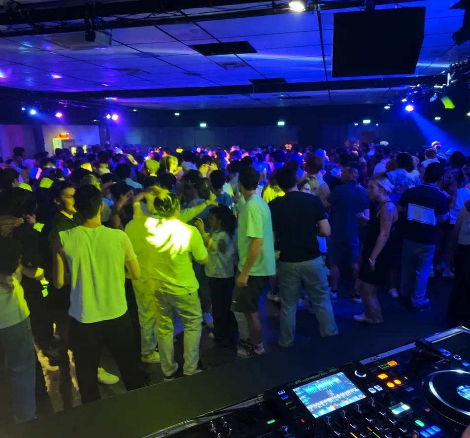
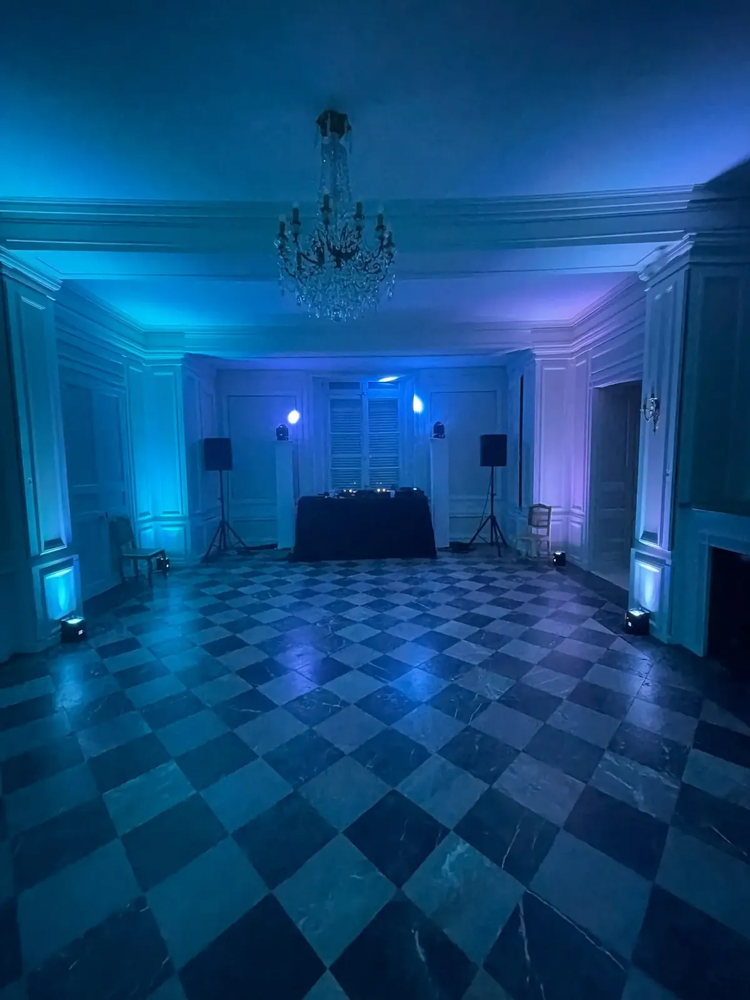

Rallyes, galas et soirées privées.
Un son L-Acoustics puissant mais maîtrisé, des lyres Wash sur totems, 8 PAR LED sur batterie pilotés en direct par console DMX Wolfmix et un DJ set construit pour votre public : de la soirée d'anniversaire en appartement au rallye au-delà de 600 invités. Devis sous 24 heures.
Une régie calibrée pour votre lieu et votre jauge
En soirée privée comme en rallye, la réussite tient autant à la qualité sonore qu'à l'adaptation aux contraintes du lieu (acoustique, voisinage, esthétique de la salle).
Rallyes & Galas
Système haute puissance L-Acoustics 12XT (380 W RMS) et caissons SB118 (600 W RMS) dimensionnés pour 600 personnes, et renforcés au-delà par nos prestataires techniques partenaires, avec gestion des temps forts et matériel de secours.
Grandes jaugesAnniversaires & Soirées privées
De l'appartement parisien au château dans toute la France : une installation élégante (régie habillée, câbles dissimulés) et une sélection musicale qui suit vos demandes et l'énergie de la piste.
Sur mesureJardins, tentes & chapiteaux
Diffusion optimisée pour les réceptions en extérieur ou sous chapiteau, complétée par nos projecteurs PAR LED sur batterie et nos lyres Wash pilotées en direct sur console Wolfmix.
Intérieur & extérieur


Formules DJ & options pour soirées privées
Choisissez entre une prestation clé en main avec DJ (sur devis) ou la location du matériel en autonomie (de 60 € à 300 €).
| Formule | Configuration matérielle | Capacité |
|---|---|---|
| Prestation DJ + L-Acoustics + Lumière | DJ, enceintes L-Acoustics 12XT + caissons SB118, ampli LA4, micros HF Shure, lyres Wash sur totems, PAR LED batterie & console Wolfmix | 40 à 600 invités |
| Location Grosse sono L-Acoustics (autonome · 300 €) | 2×12XT (380 W RMS) + 2×SB118 (600 W RMS) + ampli LA4 + Yamaha MG12 + 2 micros HF Shure | Jusqu'à 400 pers. |
| Location Petite sono (autonome · 120 €) | 2 enceintes 200 W sur trépieds + connexion Bluetooth + 1 micro Shure | Jusqu'à 50 pers. |
| Borne photo vintage (Photobooth) | Livraison, installation, impressions illimitées sur papier photo, cadre personnalisé et galerie numérique | Toutes jauges |
Options populaires
Avis clients
Plus de 120 événements animés (note moyenne 4,8/5) à Paris et dans toute la France.
★★★★★ « DJ très sympathique et pro. Matériel de qualité. Bon rapport qualité prix. Je recommande ! »
★★★★★ « Grâce à votre implication, cet événement a été un véritable succès ! »
Questions fréquentes
Quelle capacité d'accueil pouvez-vous sonoriser pour un rallye ou un gala ?
Nous intervenons de 40 à 600 invités en configuration standard (anniversaires, rallyes, réceptions privées) et au-delà de 600 personnes pour les grands rallyes et galas grâce à notre parc L-Acoustics (enceintes 12XT 380 W RMS et caissons SB118 600 W RMS).
Dans quels types de lieux intervenez-vous à Paris et dans toute la France ?
Nous équipons aussi bien les appartements et hôtels particuliers à Paris que les châteaux, jardins, péniches et chapiteaux dans toute la France. Nos projecteurs PAR LED sur batterie évitent de tirer des câbles visibles et préservent les lieux historiques.
Quelle est la différence entre la prestation complète et la location seule (120 € à 300 €) ?
La prestation complète (sur devis) comprend la livraison, l'installation anticipée, les réglages acoustiques, l'éclairage piloté en direct sur console DMX Wolfmix, la présence de votre DJ toute la soirée et du matériel de secours. La location seule (120 € pour la Petite sono 50 pers. ou 300 € pour le système L-Acoustics 400 pers., éclairage dès 60 €) sur notre page Location vous permet de gérer la musique en autonomie.
Quelles options peut-on ajouter (bar à vinyles, borne photo, effets scéniques) ?
Vous pouvez compléter votre soirée sur devis avec notre bar à vinyles (+500 disques), la borne photo vintage aux impressions illimitées ou des effets scéniques (étincelles froides, fumée lourde).
Organisons votre prochaine soirée.
Indiquez-nous la date, le lieu et le nombre d'invités. Vous recevez votre devis détaillé sous 24 heures.